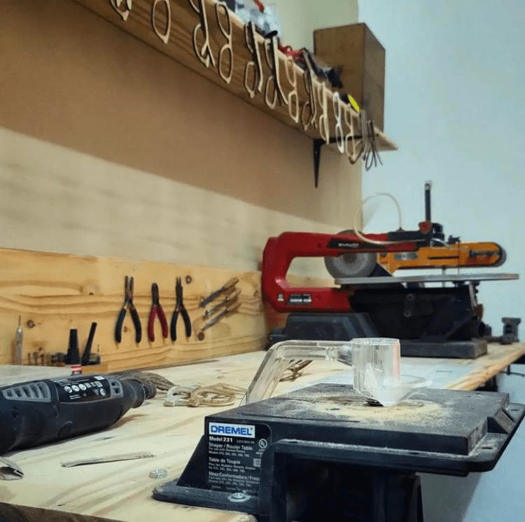

RA es un proyecto llegado en el momento exacto. Es una idea que te propone una forma distinta de proteger tus ojos. Es la fusión de una gran profesión, como la del óptico, con la libertad de crear un accesorio confortable, de madera, hecho 100% a mano y con materiales naturales , nos dió como resultado un producto artesanal. Son lentes que dan gusto vestir y que no van a haber dos iguales dando vueltas por ahí.
Aca es donde nacen las ideas y crece la magia.
Nos encontramos en la localidad de Lanus Oeste, provincia de Buenos Aires.